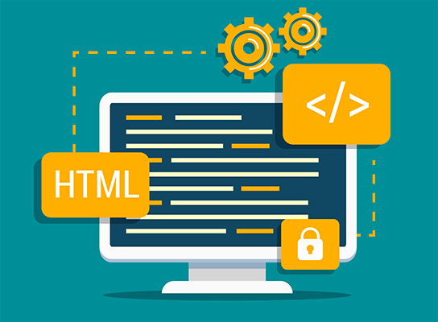

CONCLUSIONES

- puedo utilizar el codigo HTML Y CSS,para diseñar paginas de internet, aparte de esto, puedo
practicar y tener mas habilidad en este tema utilizando este codigo, para realizar tareas de otras materias, proyectos importantes y presentaciones.
- La verdad me gusto mucho la experiencia que tuve con el lenguaje html y css, es un tema que no sabia que existia y es bastante interesante aprender las diferentes etiquetas
y me imagino que hay muchas mas etiqueta spara hacer mas cosas. En un momento me estrese, pero hay que concentrarse en esto, es divertido crear mi propia pagina a mi gusto y
hacerlo con las cosas y etiquetas que he aprendido. Me gusta el tema y me gustaria seguirlo aplicando, fue muy interesante y agradable para mi.
- Las personas deberian visitar mi sitioweb porque creoq ue es un tema interesante para investigar y a mucha spersonas le sinteresa, lo hice con mucho esfuerzo e inetente hacer todo lo posible
para que me quedara organizado y con buena presentacion.